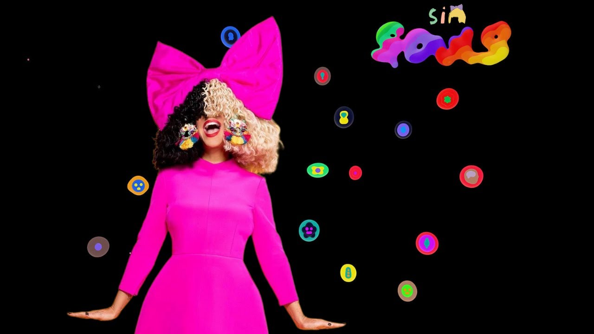
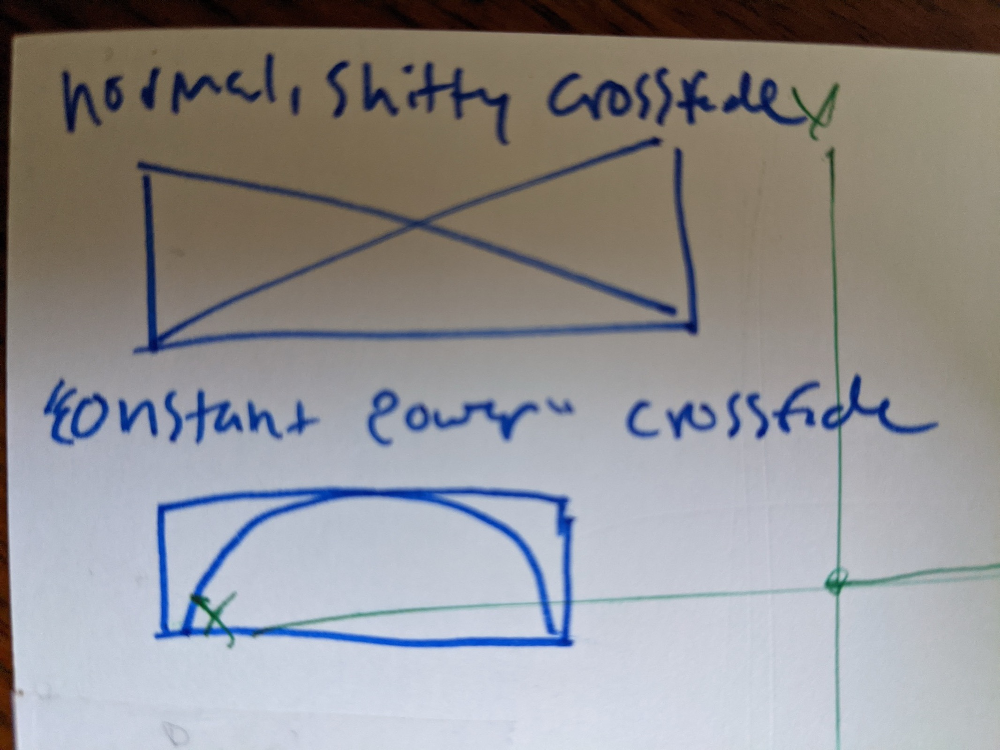
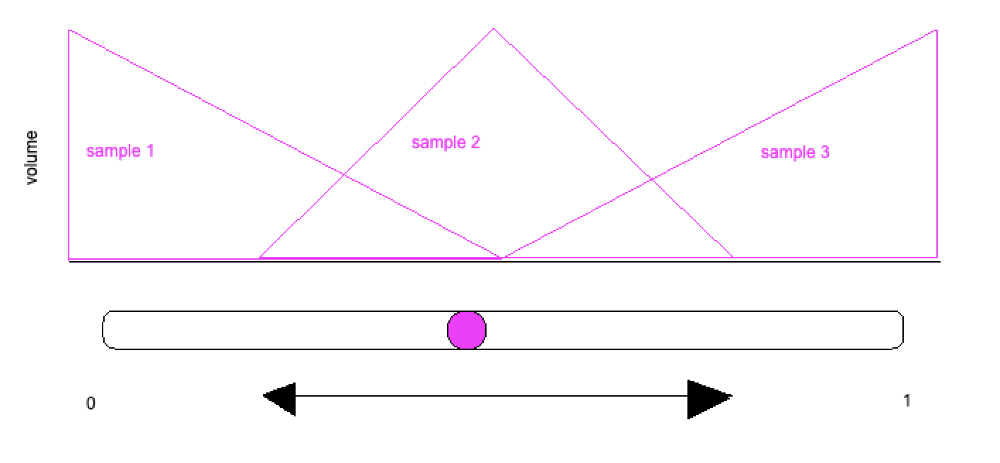
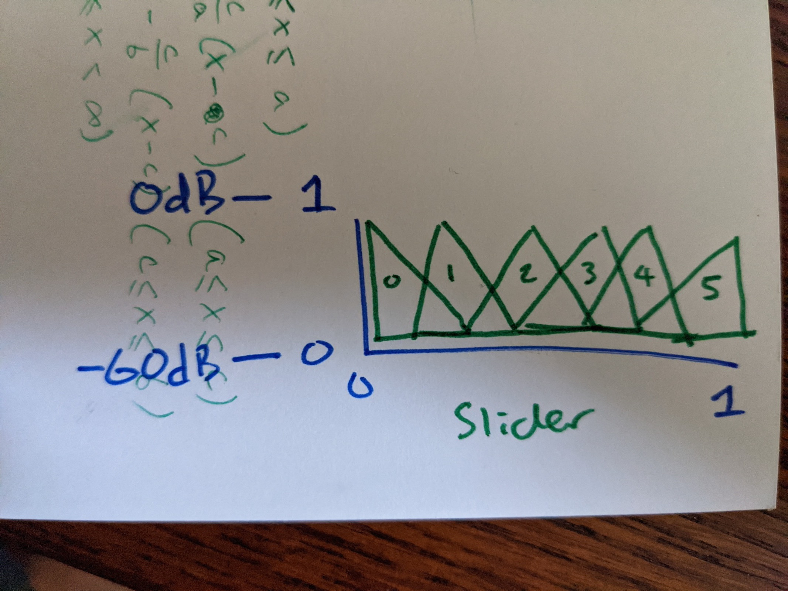
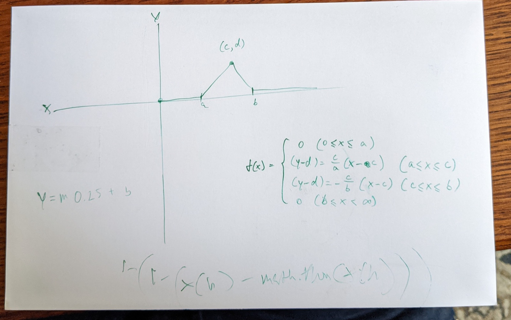
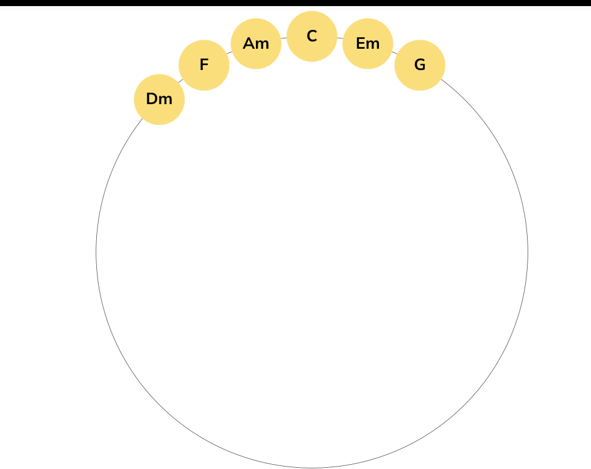
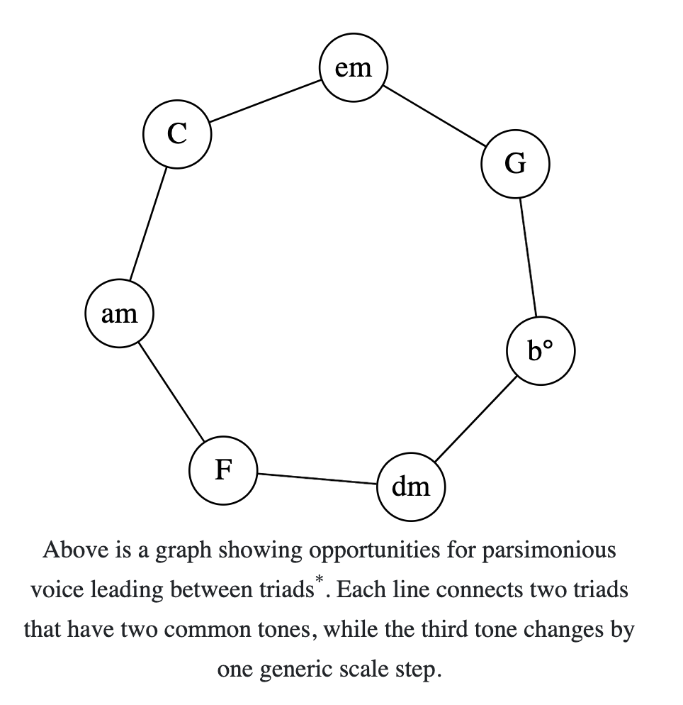
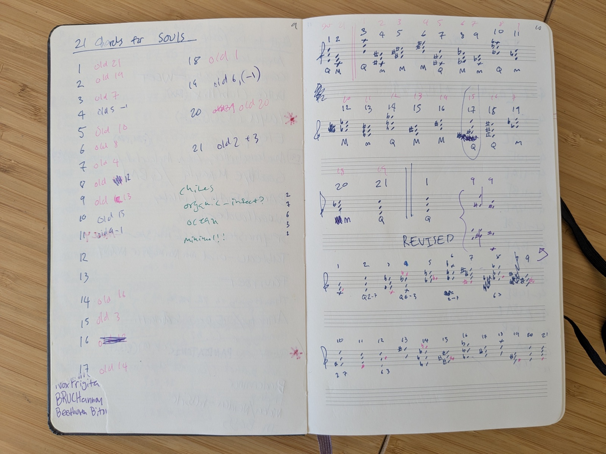

Role · Interactive music system: design, prototyping, composition
With · Sia & David OReilly
Platforms · Web · Interactive characters
Problem
SOULS is a collection of 10,000 interactive characters by Sia and David OReilly, each one alive with its own ambient music and responsive to its own emotional states. I designed and prototyped the interactive music system that gives every character a distinct sonic identity. Ten thousand characters can't each get a composition, so the job was to design a small musical vocabulary whose combinations and transpositions could cover all of them, and a way for a character to drift through that vocabulary without the listener ever hearing a seam.

Insight
The system grew out of an email thread with David in December 2021 about how to blend between looped ambiences. A naive linear crossfade dips in loudness at the midpoint, so every transition announces itself. The fix is a constant-power crossfade: fade along cosine curves instead of straight lines and the combined energy stays level, so the ear hears one continuous texture changing color rather than two files trading places. I sent David the explanation as Sharpie sketches, one rectangle labeled with the linear crossfade's X, the other with the equal-power curves.

The December 2021 sketch I emailed David: a linear crossfade (labeled, in my handwriting, "normal, shitty crossfade") against the "constant power" curves that keep loudness level through the transition.

The cleaned-up version: overlapping volume envelopes for adjacent samples along a single slider, so one continuous control moves through the whole set.
Prototype
I built the idea as a series of JavaScript and Web Audio interaction tests: first a naive two-sample crossfader, then the constant-power version, then a six-way crossfader that spreads a whole family of chords across one slider, each chord's volume rising and falling as a triangle along the control's travel. I worked the triangles out as piecewise functions on paper before writing any code. David compressed my gain math into a single line of Tone.js and wrote back: "We will plot this line on a circle and make it a dial!" The dial was step one, a concrete handle the engineers could tie their output to.

The six-way crossfader sketch: chords 0 through 5 as overlapping volume triangles along one slider, 0 dB at each peak, silence between neighbors' peaks.

The volume triangle as a piecewise function, from the same email. Design work here meant doing the math the interaction needed.
Design decision
A parameter that wraps around needs a loop, and a slider's worth of chords leaves a gap: six diatonic triads sit on the circle as an open arc, and passing the last one would jump-cut back to the first. The way to close it comes from parsimonious voice leading. Arrange the seven diatonic triads so that every neighboring pair shares two common tones while the third voice moves by a single scale step, and the seventh chord, the diminished triad everyone else would throw away, connects the end of the chain back to the beginning. Every position on the circle is a smooth blend of two chords that are already close relatives, so the harmony never lurches no matter where the character wanders.

Six chords on the circle leave an open arc: the loop doesn't close.

The diagram I sent David on December 6, 2021: all seven diatonic triads around the circle, each line connecting two triads that share two common tones while the third moves by one scale step. The b° closes the loop so the blend can wrap around with no seam.
Design decision
The system started in a notebook. I wrote out a vocabulary of 21 chords, all trichords, three notes each: major, minor, and quartal, labeled M, m, and Q on the page. Then I did the math on how they could combine: overlap the right trichords and you get seventh chords, ninth chords, eleventh chords, four-note quartal stacks. A vocabulary small enough to record and large enough to reach extended harmony.
Those 21 chords became the template for 21 ambient loops, one per chord. The loops were then transposed mathematically so that each of the 10,000 characters carries a unique musical identity. Honest limits of the record: I no longer remember exactly how that transposition scheme worked, and I don't have the math anymore. The notebook preserved the chord side of the system; the identity math is gone.

The notebook page: 21 trichords for SOULS, each labeled M, m, or Q (major, minor, quartal), with a red renumbering pass against an older ordering and a REVISED set sketched below.
Iteration
The project folders keep the revision history the notebook only hints at. The earliest tests, from November 2021, render a single flute texture across major, minor, seventh, augmented, and fully diminished variants. A family of choral textures (choral-magnetic, choral-robo) ended up in a folder named rejects. The full 21-loop set was recorded and then redone end to end: 21_soul_ambiences_OLD sits next to 21_soul_ambiences_REVISED, and the notebook's red ink tells the same kind of story, every chord renumbered against an earlier ordering. The green notes in the margin (ocean, minimal!!) are direction for the textures.
The email thread carries the rest of the record. In January 2022 the delivery spec was locked: 21 loops, twenty seconds to a minute each, named by chord number, compressed for the web. Feedback came back in plain language, David flagging that chords 2, 4, and 7 were "too haunting," and my own verdict on the first full set, too bombastic and cinematic for characters meant to be lived with, which is what forced the end-to-end redo. The last fix landed in August 2022, after launch: mp3 compression had shifted the loop points and opened tiny gaps in the seamless loops, so the loops were rebuilt to survive their own compression.
Outcome
The collection launched in July 2022, credited "music by Nathan Turczan," and reached #3 on Billboard's monthly ranking of top-selling digital collectibles in music, with coverage in Forbes and Designboom.